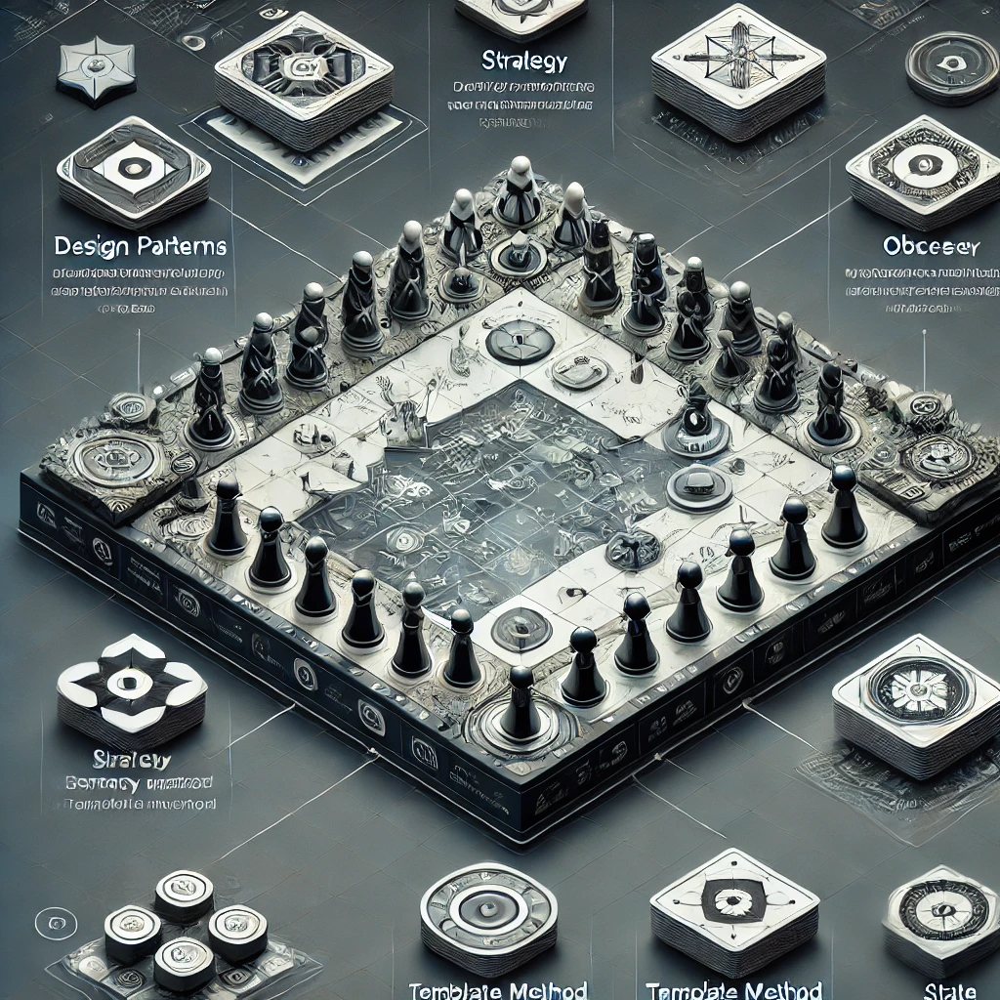

Mes Projets
L-System
Exploration des systèmes de réécriture pour modéliser des structures fractales.
Strategy Game – Design Patterns
Création d’un jeu de stratégie avec une architecture modulaire pour des règles complexes. (Java, Strategy, Proxy, Observer, Template Method, State)

Application Web – Gestion d’un Parc Animalier (CRUD)
Développement d’une application web permettant la gestion d’un parc animalier, incluant les fonctionnalités CRUD. (PHP, MVC, MongoDB)

Application Mobile – TodoList
Développement d’une application mobile pour la gestion des tâches, synchronisée avec une base de données GraphQL. (JavaScript, React Native, Apollo - GraphQL)

Monde des Blocs – Planification IA
Développement de solutions optimisées pour résoudre des problèmes de planification dans un environnement de blocs. (Java, Dijkstra, A*, BFS, DFS, MackSolver, HeuristicMackSolver, Backtrack)
Analyse des Algos de Tri
Ce projet met en œuvre et analyse les performances des algorithmes de tri en fonction de différents types de désordre, de tailles de données et de répartitions du désordre, tout en exploitant des structures de données optimisées.